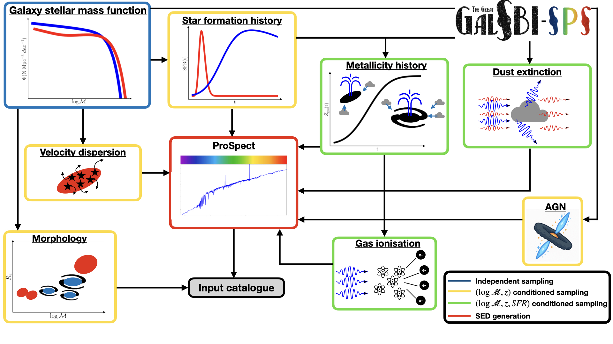
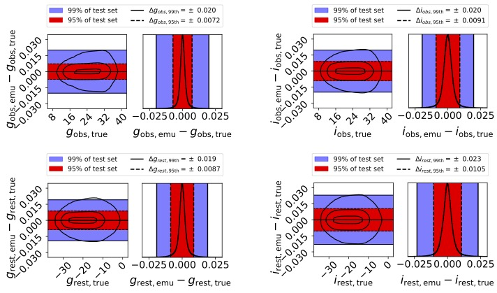
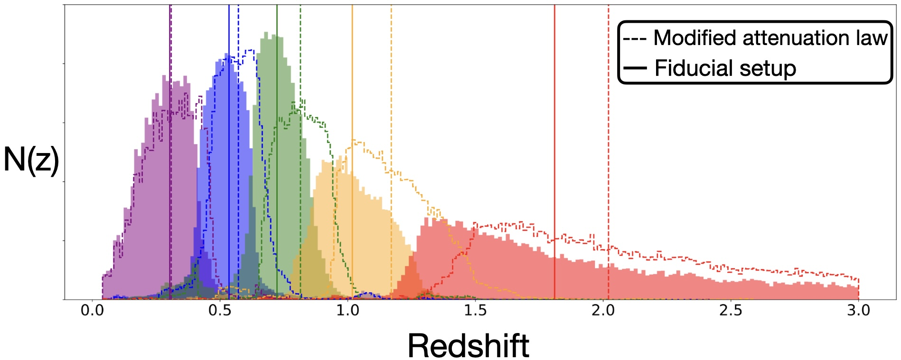
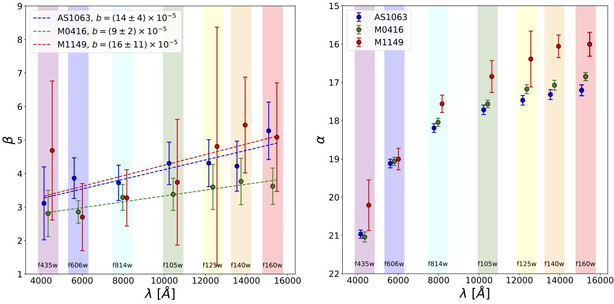
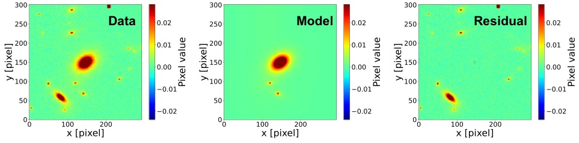
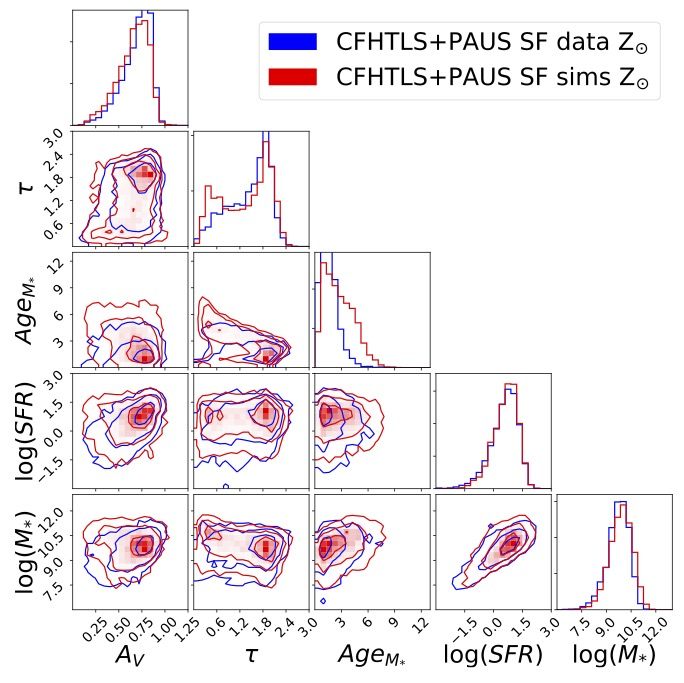
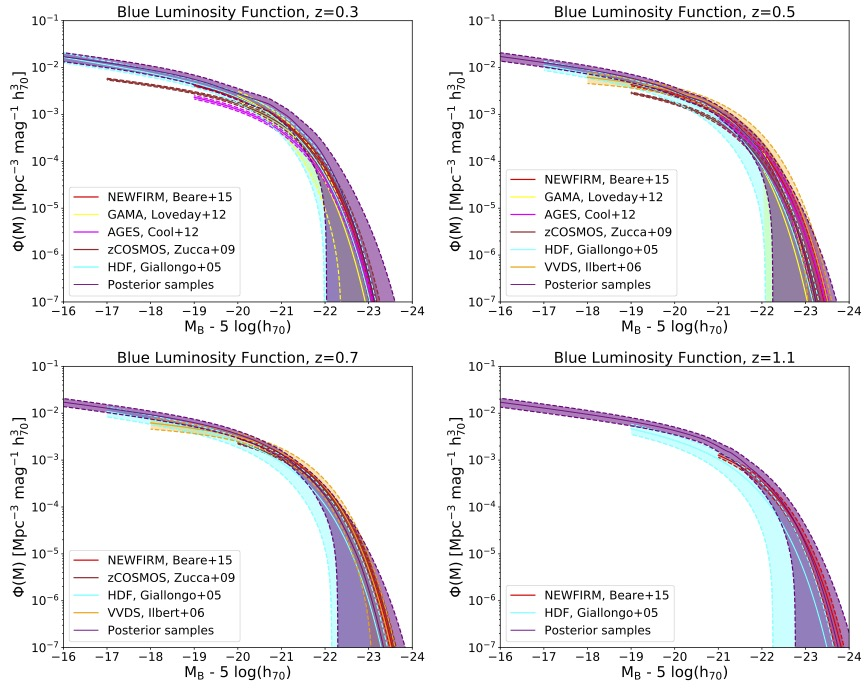
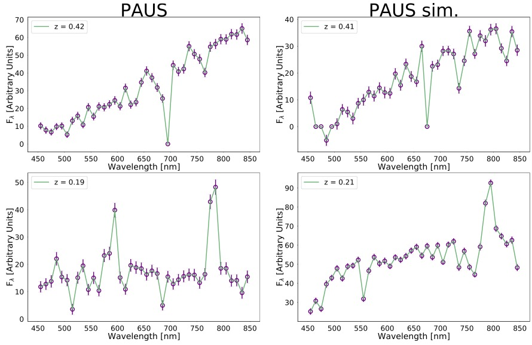
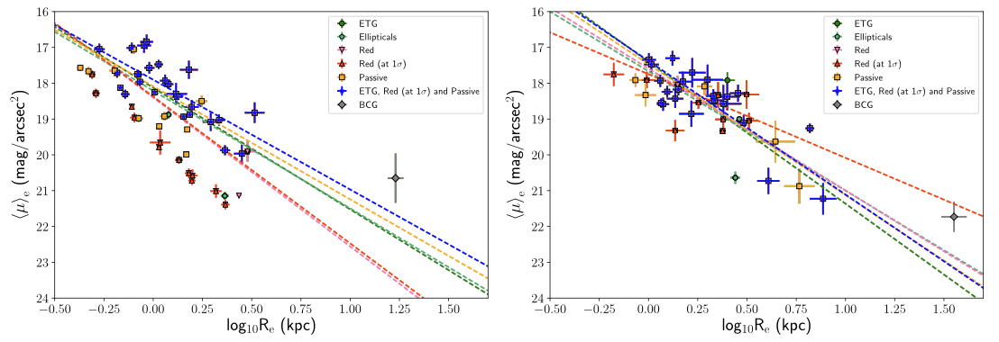

Luca Tortorelli · Astrophysicist · Science Communicator
Modelling the galaxy population in next-generation galaxy surveys
Post-doc at LMU Munich. Author of the popular–science book Galassie, published by Edizioni LaSerra. Available in Italian bookstores from 12 December 2025. Freelance writer for Geopop.
About
I am Luca Tortorelli, post-doctoral researcher at the University Observatory of the Ludwig-Maximilians-University in Munich. My work focuses on forward-modelling the galaxy population in photometric and spectroscopic galaxy surveys to calibrate redshift distributions for cosmological analyses and obtain quantitative insights into galaxy evolution. I developed the GalSBI-SPS galaxy population model which allows to generate catalogues of galaxy physical, morphological, and photometric properties with few lines of Python code. I am part of some of the most important surveys that will revolutionise our understanding of the cosmos and of the galaxy population in it, namely Rubin-LSST, 4MOST and DESI. I am also interested in the scaling relations of early-type galaxies in the most massive galaxy clusters in the Universe at intermediate redshifts.
I am involved in teaching astronomy courses for master's students, mentoring bachelor and master's theses, and communicating science to a broader audience through articles, books, and public outreach. Besides publishing the popular-science book "Galassie", I collaborate as freelance writer for the Italian outreach platform Geopop.
Research
Forward-modelling & SBI
My research focuses on the forward modelling of galaxy surveys and the development of simulation-based inference methods for galaxy evolution and observational cosmology. I have led the design of physically motivated generative models that connect galaxy physical and morphological properties to realistic photometric and spectroscopic observables. During my PhD, I introduced forward-modelling and Approximate Bayesian Computation techniques to infer galaxy population properties while explicitly accounting for selection effects and observational systematics, resulting in the first measurement of galaxy luminosity functions using simulation-based inference. In my postdoctoral research, I extended this framework to Stage-IV survey applications, contributing to the modelling of redshift distributions and survey systematics relevant for precision cosmology. I developed and now maintain open-source tools such as GalSBI-SPS and morphofit, which are used to simulate galaxy populations and extract structural parameters in wide-field imaging data. I am actively involved in large international collaborations including LSST, 4MOST, DESI, and PAUS, where I hold coordination and governance roles.
Galaxy evolution
My research themes includes also the measurement of galaxy physical properties from photometric and spectroscopic data to study the scaling relations of the galaxy population. In Tortorelli+23 I developed and publicly released morphofit, a highly parallelisable Python package for the automated measurement of galaxy structural parameters in wide-field imaging surveys. I used morphofit in Tortorelli+18,23 to measure the structural parameters of early-type galaxies (ETGs) from the HST data of three massive galaxy clusters at intermediate redshifts, with the aim of studying the Kormendy relation dependence on sample selection and wavelength probed. I am also expert in the use of SED fitting codes to measure stellar population properties of galaxies. In Tortorelli+21 I used CIGALE to measure stellar masses, SFRs, extinctions, and metallicities of PAUS galaxies and compare those against the same quantities measured on simulated data from GalSBI to test the realism of our forward-modelling approach. The ability to reliably measure galaxy properties from photometric and spectroscopic data will be fundamental to constrain GalSBI-SPS with informative Stage IV data to improve cosmological parameters estimate and obtain quantitative galaxy evolution insights.
Codes & tools
The (Great) GalSBI
GalSBI is a parametric galaxy population model constrained by observational data using simulation-based inference (SBI). GalSBI is publicly available as Python package via pip and gitlab, providing a flexible framework for generating realistic galaxy catalogs and rendering them into astronomical images via UFig. The Python package offers the possibility to draw realistic catalogues from two galaxy population models: GalSBI-SPS, a stellar population synthesis-based model, and its phenomenological version simply labelled as GalSBI.
morphofit
morphofit is a highly parallelisable Python package for the structural decomposition of galaxy images in modern wide-field surveys. The package is publicly available via pip and github. It has been successfully applied to measure the structural parameters of galaxies on HST, JWST, and KiDS images, but its modularity makes it suitable for the analysis of any photometric image.
First author publications
For a complete list, see my ADS library.
-
GalSBI-SPS: a stellar population synthesis-based galaxy population model for cosmology and galaxy evolution applications
Astronomy & Astrophysics, 2025 – GalSBI-SPS is a stellar population synthesis-based galaxy population model that generates catalogues of galaxy physical, morphological, and photometric properties for forward-modelling applications. Galaxy catalogues are sampled hierarchically, starting with redshifts and stellar masses from a galaxy stellar mass function (blue box). Star formation histories, velocity dispersions, morphological properties and AGN contributions are sampled conditionally on redshifts and stellar masses (orange boxes), while gas metallicities, ionisations, and dust properties are also dependent on SFR (green boxes). ProSpect (red box) turns these physical properties into SEDs and magnitudes.
-
ProMage: fast galaxy magnitudes emulation combining SED forward-modelling and machine learning
Proceedings of the IAU symposium "Universe AI: Exploring the Universe with Artificial Intelligence", 2025 – ProMage is a neural network that emulates the computation of observer- and rest-frame magnitudes from the generative galaxy SED package ProSpec. ProMage accelerates magnitude computation by a factor of 10,000 compared to ProSpect, while achieving per-mille relative accuracy for 99% of sources in the test set across the g, r, i, z, y Hyper Suprime-Cam bands.
-
Impact of stellar population synthesis choices on forward modelling-based redshift distribution estimates
Astronomy & Astrophysics, 2024 – Stellar population synthesis (SPS) requires many detailed assumptions about galaxy costituents, for which model choices or parameter values are currently uncertain. In this work we performed a sensitivity analysis to quantify how different SED modelling assumptions impact tomographic N(z) in SPS-based forward-modelling. We found that uncertainities in the stellar IMF, AGN, gas physics, and dust attenuation prescriptions significantly bias the mean and scatter of tomographic N(z) beyond Stage IV requirements.
-
The Kormendy relation of early-type galaxies as a function of wavelength in Abell S1063, MACS J0416.1-2403, and MACS J1149.5+2223
Astronomy & Astrophysics, 2023 – In this work we use morphofit to analyse the Kormendy relations of the three Hubble Frontier Fields clusters, Abell S1063 at z = 0.348, MACS J0416.1-2403 at z = 0.396, and MACS J1149.5+2223 at z = 0.542, as a function of wavelength. This was the first time the Kormendy relation of ETGs has been explored consistently over such a large range of wavelengths at intermediate redshifts. We found that the Kormendy relation slopes increase smoothly with wavelength from the optical to the near-infrared (NIR) bands in all three clusters, with the intercepts becoming fainter at lower redshifts due to the passive ageing of the ETG stellar populations.
-
morphofit : An automated galaxy structural parameters fitting package
Frontiers of Astronomy and Space Sciences, 2023 – morphofit is a highly parallelisable Python package for the robust estimate of galaxy structural parameters in modern wide-field surveys. The package makes use of wide-spread and reliable codes, namely, SExtractor and GALFIT. It has been optimised and tested in both low-density and crowded environments, where blending and diffuse light makes the structural parameters estimate particularly challenging. morphofit allows the user to fit multiple surface brightness components to each individual galaxy, among those currently implemented in the code. The package is available on github and on the Pypi server.
-
The PAU survey: measurement of narrow-band galaxy properties with approximate bayesian computation
Journal of Cosmology and Astroparticle Physics, 2021 – In this work, we forward-modelled the Physics of the Accelerating Universe Survey (PAUS) narrow-band data to improve the constraints on the spectral coefficients used to create the galaxy SEDs of the galaxy population model in Tortorelli et al. 2020. We constrained our model using SBI, for the first time on multiple datasets simultaneously, and we tested the obtained posterior by comparing the stellar population properties measured consistently on data and simulations with CIGALE
-
Measurement of the B-band Galaxy Luminosity Function with Approximate Bayesian Computation
Journal of Cosmology and Astroparticle Physics, 2020 – This work represents the first measurement in the literature of galaxy population properties combining forward-modelling and SBI. We use Approximate Bayesian Computation (ABC) to constrain the galaxy population model parameters of the simulations and in doing so we measured the galaxy luminosity function of blue and red galaxies as function of redshift.
-
The PAU Survey: a forward modeling approach for narrow-band imaging
Journal of Cosmology and Astroparticle Physics, 2018 – In this work we tested our phenomenological galaxy population model by forward modeling the 40 narrow-band photometry given by the PAU Survey. By comparing the principal components determined on data and simulations, we found that our model showed good agreement with the observations despite not being yet constrained against data using SBI.
-
The Kormendy relation of galaxies in the Frontier Fields clusters: Abell S1063 and MACS J1149.5+2223
Monthly Notices of the Royal Astronomical Society, 2018 – In this work we analysed the Kormendy relation (KR) of the Frontier Fields clusters Abell S1063 and MACS J1149.5+2223. We defined and compared four different way of selecting early-type galaxy samples (a) Sersic indices: early-type (‘ETG’), (b) visual inspection: ‘ellipticals’, (c) colours: ‘red’, (d) spectral properties: ‘passive’. The comparison between the KRs obtained from the different samples suggests that the sample selection could affect the estimate of the best-fitting KR parameters. The KR built with ETGs is fully consistent with the one obtained for ellipticals and passive. On the other hand, the KR slope built on the red sample is only marginally consistent with those obtained with the other samples.
Outreach
My popular–science book Galassie
I am the author of Galassie, a popular–science book on the world of galaxies published by Edizioni LaSerra. The book is available in Italian bookstores starting 12 December 2025 and can be also purchased from major online retailers:
Amazon · Mondadori · Feltrinelli · IBS
Collaboration with Geopop
Since March 2023, I have been a freelance writer for the leading Italian outreach page Geopop. With over 240 written articles , I am the leading contributor in the astronomy and space exploration section of the website.
Contact
The best way to reach me is via email. I am happy to discuss research, teaching, collaborations, and outreach projects.